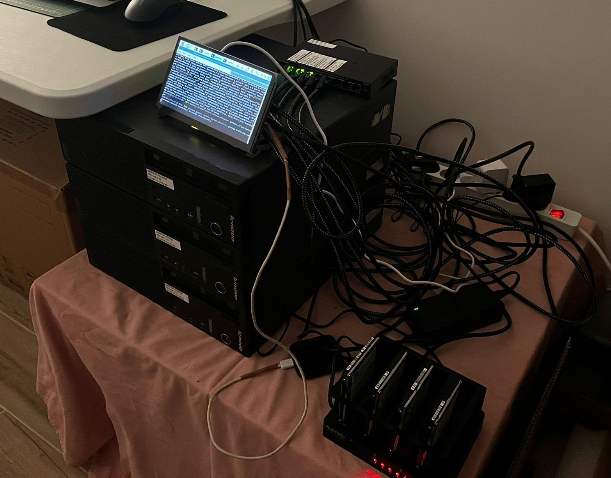
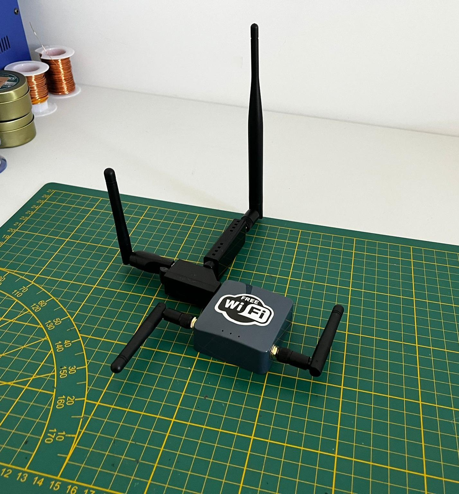
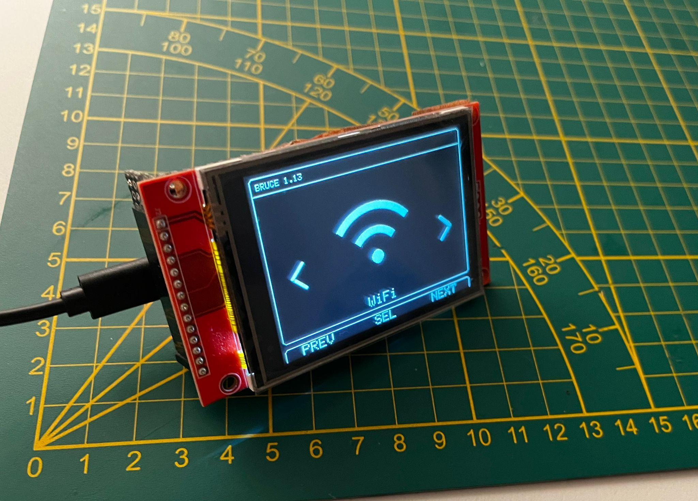
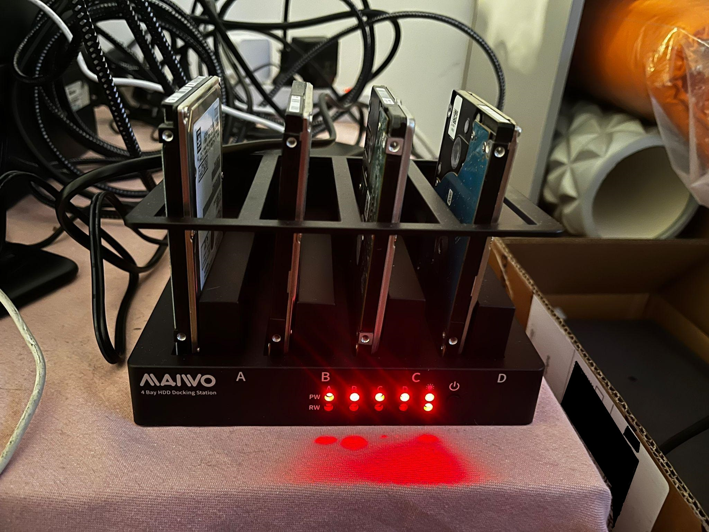
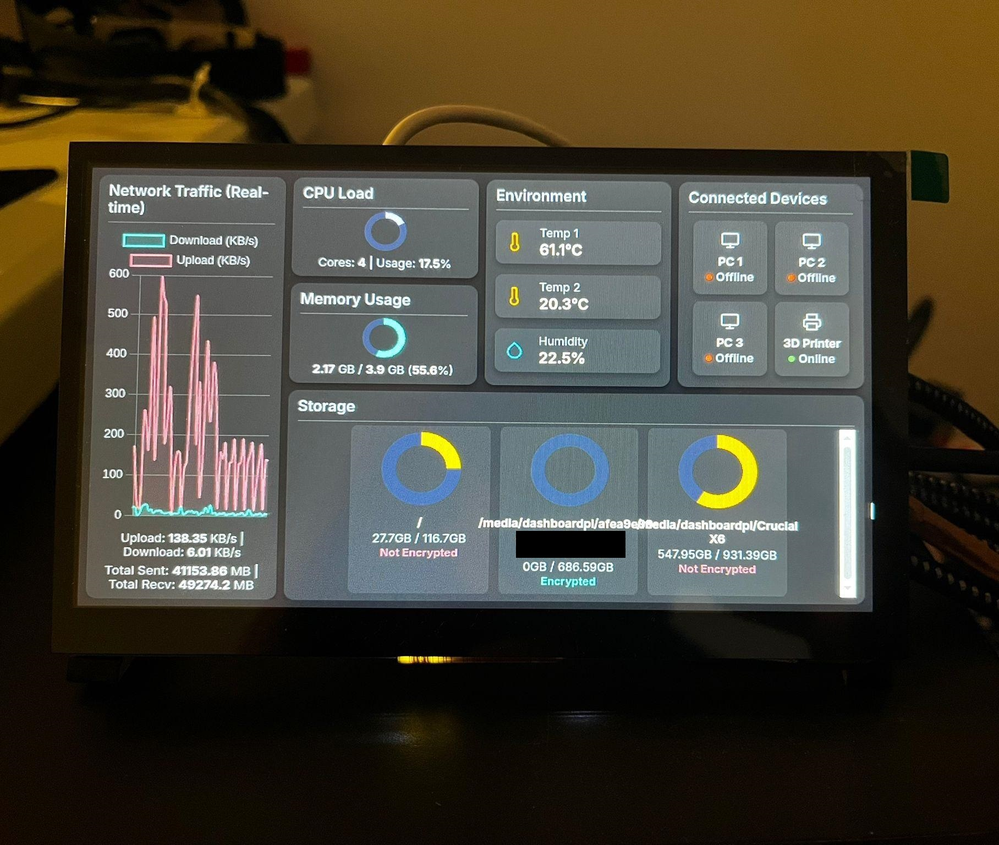
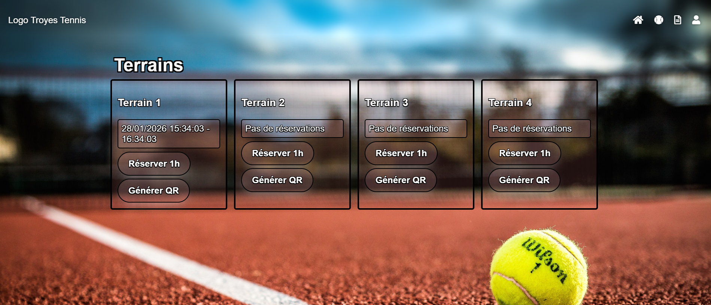

Programmation, Électronique & Cybersécurité
De la soudure de microcontrôleurs à l'analyse de signaux sur oscilloscope, la conception de PCB, et l'exploration de la cybersécurité dans un home lab auto-hébergé. Faire le pont entre matériel et logiciel.
Une installation Raspberry Pi évolutive hébergeant des applications sécurisées et des sites web.

Un WiFi Pineapple DIY fabriqué à partir d'un routeur GL.iNet Shadow pour l'audit réseau et les tests d'intrusion.

Outil matériel de pentest personnalisé créé avec le firmware open-source 'bruce' pour ESP32.

Un serveur de stockage en réseau (NAS) utilisant 4 disques durs chiffrés, accessible via une interface web sur un Raspberry Pi.

Un tableau de bord en Flask (Python) affichant des métriques en temps réel comme la température du Raspberry Pi, la température ambiante, le trafic réseau et l'état des disques.

Projet réalisé en classe : j'ai choisi de concevoir un système de contrôle d'accès avec un site web pour générer des QR codes, scannés par un script Python externe avec OpenCV pour ouvrir un portail.
